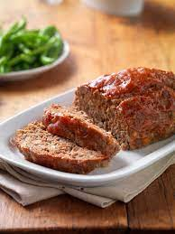

Meatloaf

Description
Meatloaf is a dish of ground meat that has been combined with other ingredients and
formed into the shape of a loaf, then baked or smoked. The final shape is either
hand-formed on a baking tray, or pan-formed by cooking it in a loaf pan.
Ingredients
Steps
- get beef
- pound beef
- add salt and pepper
- cook
- eat